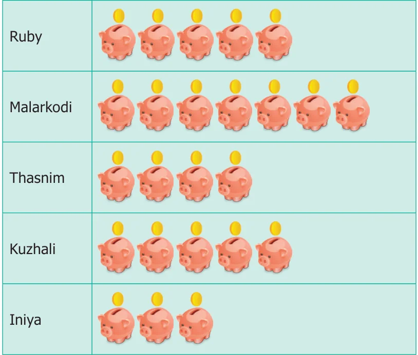
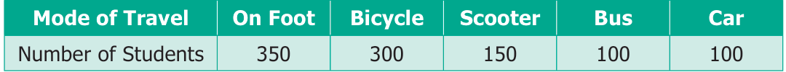

Objective Type Questions
- 5.A bar graph can be drawn using __________.
- (a)Horizontal bars only
- (b)Vertical bars only
- (c)Both horizontal bars and vertical bars
- (d)Either horizontal bars or vertical bars.
- 6.The spaces between any two bars in a bar graph __________.
- (a)can be different (b) are the same
- (c)are not the same (d) all of these
Miscellaneous Practice Problems
- 1.The heights (in centimeters) of 40 children are.
110 112 112 116 119 111 113 115 118 120 110 113 114 111 114 113 110 120 118 115 112 110 116 111 115 120 113 111 113 120 115 111 116 112 110 111 120 111 120 111 Prepare a tally marks table.
- 2.The following pictograph shows the total savings of a group of friends in a year.
Each picture represents a saving of Rs.100. Answer the following questions.


- (i)What is the ratio of Ruby’s saving to that of Thasnim’s?
- (ii)What is the ratio of Kuzhali’s savings to that of others?
- (iii)How much is Iniya’s savings?
- (iv)Find the total amount of savings of all the friends?
- (v)Ruby and Kuzhali save the same amount. Say True or False.
- 3.There are 1000 students in a school. Data regarding the mode of transport of the
students is given below. Draw a pictograph to represent the data.
